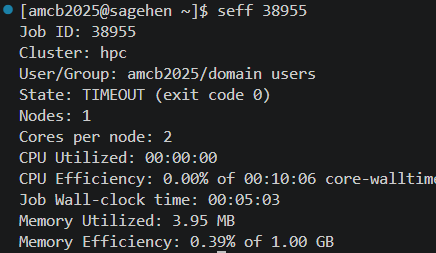
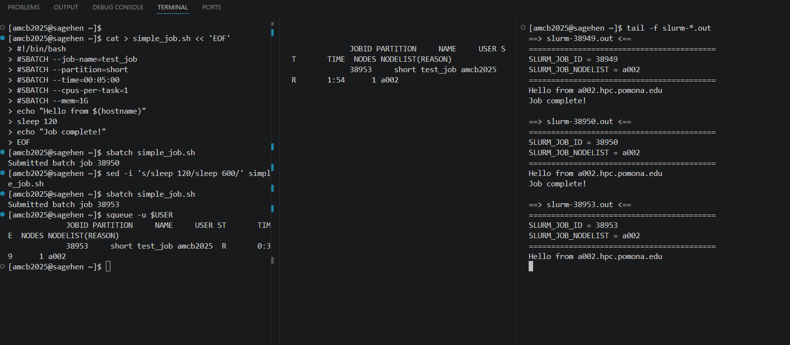

Integrated Terminal
Last updated on 2026-08-24 | Edit this page
Overview
Questions
- How do I use the integrated terminal in VS Code?
- How do I submit and monitor SLURM jobs from VS Code?
- How do I use multiple terminal panes for the edit-submit-monitor workflow?
- How do I activate conda environments and load modules cleanly?
Objectives
- Open and use VS Code’s integrated terminal on Sagehen
- Run SLURM commands (sbatch, squeue, scancel, seff)
- Use multiple terminal tabs and split terminals for parallel workflows
- Configure a custom terminal profile that auto-loads your conda environment
- Recover gracefully from disconnects and dropped sessions
Why the Integrated Terminal Matters for HPC
When you connect to Sagehen with VS Code Remote-SSH, the editor pane edits files on the cluster but does not, on its own, give you a way to run commands there. The integrated terminal is the bridge. It opens a real shell on the Sagehen login node, in the same SSH session your editor is using. That means everything you type in the terminal sees exactly the files you are editing, with no synchronization step.
This tight coupling is the entire reason VS Code Remote-SSH is more productive for HPC work than editing locally and rsyncing changes. The code you save is immediately the code you can run. The job you submit immediately reads the script you just changed.
Opening the Terminal
Press Ctrl+` (backtick, the key above Tab on most keyboards) to open the integrated terminal. When connected to Sagehen, the prompt confirms you are on the cluster:
<myusername>@sagehen-login-1:~$This is your Sagehen login node shell. The terminal starts in your
home directory (/rhome/<myusername>). Your usual
.bashrc or .zshrc runs, so any aliases, PATH
additions, or module load lines you have configured take
effect.
Login node etiquette
The integrated terminal runs on the login node, not
a compute node. The login node is shared by every Sagehen user and is
meant for editing, submitting jobs, light file operations, and small
tests. Do not run heavy compute, training, or data processing in this
terminal. If you need an interactive compute environment, request one
with srun --partition=short --time=00:30:00 --pty bash and
the terminal will move to a compute node for the duration of that
session.
Running SLURM Commands
The five commands you will use most:
Cancel a job and check history
BASH
scancel 12345 # Stop one job immediately
scancel -u $USER # Stop all of your jobs (use with care)
sacct -u $USER --format=jobid,jobname,state,elapsed,maxrss # Recent jobs
seff 12345 # CPU and memory efficiency of completed jobseff is the unsung hero of resource tuning. After a job
completes, seff JOBID reports actual CPU efficiency, memory
used vs requested, and wall time. Running it on every completed job for
a week will reshape how you write SLURM scripts; most users overestimate
memory by 4 to 10x.

seff on a finished test job:
near-zero CPU and memory efficiency is your cue to shrink the next
request. (This example ended in TIMEOUT because the test deliberately
overran its 5-minute limit.)Multiple Terminals for the Real Workflow
A single terminal forces you to choose between editing focus and monitoring focus. Multiple terminals let you do both at once.
Multiple terminal tabs
Click the + icon next to the terminal name to open additional terminals. Each is an independent shell on Sagehen.
A common configuration: one terminal for submitting jobs, a second
for watch squeue -u $USER to see queue state update every 2
seconds, a third running tail -f slurm-*.out to watch the
active job’s output.
Split terminal
Right-click the terminal area and choose Split Terminal, or press Ctrl+Shift+5, to put two shells side-by-side in the same panel. Both run independently on Sagehen. This is especially useful when you want to compare two log files or two job outputs at the same time without flipping tabs.
Custom Terminal Profiles
By default, the integrated terminal runs bash (or
zsh) with your default profile. You can define custom
profiles that auto-activate a conda environment or load specific
modules. Open Settings (Ctrl+,) and search for
“terminal.integrated.profiles.linux”, then click “Edit in
settings.json”:
JSON
"terminal.integrated.profiles.linux": {
"bash (default)": {
"path": "bash"
},
"ml-env": {
"path": "bash",
"args": ["-l", "-c", "module load miniconda3 && conda activate ml_env && exec bash"]
},
"gpu-interactive": {
"path": "bash",
"args": ["-l", "-c", "srun --partition=gpu --gres=gpu:l40s:1 --time=02:00:00 --pty bash"]
}
}Now the + dropdown in the terminal panel offers three profiles. Picking “ml-env” opens a terminal with conda already activated. Picking “gpu-interactive” requests an L40S for 2 hours and drops you into a shell on a compute node.
Login vs interactive vs SLURM-allocated shells
Three different shell types behave differently:
Login shell (default new terminal): runs
.bash_profileand.bashrc. On the shared login node. No GPU access. Good for editing and submitting.Interactive shell with srun: runs on a compute node. Allocated CPU/GPU/memory until you exit. Counts against your job allocation. Good for debugging a job that crashes inside SLURM.
Inside an
sbatchscript: only runs.bashrc, not.bash_profile. If a script that works in your interactive shell fails insidesbatch, the difference is usually a missingmodule loadorconda activatethat lives in.bash_profile. Move it to.bashrcor load it explicitly in the SLURM script.
Recovering from Disconnects
The integrated terminal session lives inside the SSH connection. If your laptop sleeps, the wifi drops, or VS Code closes, the connection breaks. Two strategies for surviving disconnects:
Reconnect quickly
VS Code’s Remote-SSH extension detects the broken connection and offers to reconnect. Most of the time this works and you pick up where you left off, but commands that were running in the terminal at the moment of disconnect are killed.
Use tmux for persistence
For longer interactive sessions where losing the terminal would hurt,
run tmux (preinstalled on Sagehen):
BASH
tmux new -s work # start a session named "work"
# ... do things, run commands ...
# Ctrl+b d to detach (session keeps running)
# Later, after a disconnect:
tmux attach -t work # resume the sessiontmux keeps your shell, processes, and scrollback alive
on the login node even after VS Code disconnects. This is the only
reliable way to run a long-running interactive command (such as
python -i for an analysis session) without fear of losing
it. Note that tmux does not protect SLURM jobs themselves;
those run on compute nodes and are managed by SLURM regardless of your
terminal state.
Terminal Keyboard Shortcuts
| Action | Windows/Linux | Mac |
|---|---|---|
| Toggle terminal | Ctrl+| Cmd+
|
|
| New terminal | Ctrl+Shift+| Cmd+Shift+
|
|
| Split terminal | Ctrl+Shift+5 | Cmd+Shift+5 |
| Switch between terminals | Alt+Up/Down | Cmd+Up/Down |
| Clear screen | Ctrl+L | Cmd+K |
| Kill terminal | (close icon) | (close icon) |
| Reverse search history | Ctrl+R | Ctrl+R |
The Edit-Submit-Monitor Workflow
Integrated Development and Job Monitoring
- Edit your script in the VS Code editor
-
Submit with
sbatchin terminal 1 -
Monitor queue state with
watch squeue -u $USERin terminal 2 -
Tail output with
tail -f slurm-JOBID.outin terminal 3 - Review results when the job completes
- Iterate: edit your script and resubmit
This tight loop is why VS Code Remote-SSH is so productive for HPC work.
Challenge: Submit and Monitor a Job
-
Create
simple_job.shin the editor: In the terminal:
chmod +x simple_job.sh && sbatch simple_job.shOpen a second terminal tab and run
watch -n 2 squeue -u $USERWhen the job runs, open a third tab:
tail -f slurm-*.outAfter completion, run
seff JOBIDto see efficiency

{alt=‘VS Code’s terminal panel split into three panes, all connected to Sagehen. The left pane creates and submits a job script to the short partition, the middle pane shows squeue output with the job running on node a002, and the right pane tails the slurm output files ending with Job complete.’}After sbatch, you see “Submitted batch job 12345”. The
watch terminal shows the job with state PD (pending)
briefly and then R (running). The tail terminal shows
“Hello from a005” (or another node) and after 30 seconds “Job
complete!”. seff 12345 reports CPU efficiency near 0% (the
job mostly slept) and memory near 0 KB. This is exactly what
seff is for: identifying jobs that overrequested resources
so you can right-size future submissions.
Challenge: Configure a Conda Profile
Define a custom terminal profile in VS Code that opens a bash shell
with a specific conda environment activated. Verify it works by checking
which python shows the env’s interpreter, not the system
default.
In settings.json:
JSON
"terminal.integrated.profiles.linux": {
"research-env": {
"path": "bash",
"args": ["-l", "-c", "module load miniconda3 && conda activate research-env && exec bash"]
}
}Open the + dropdown in the terminal panel, choose
“research-env”, and run which python. The output should be
/rhome/<myusername>/miniconda3/envs/research-env/bin/python
(or wherever your env lives), not /usr/bin/python3.
If which python still shows the system Python, the most
common cause is that module load miniconda3 did not run
because the profile uses -c instead of -l -c.
The -l makes bash a login shell so it sources
/etc/profile, where the module command is defined.
- The integrated terminal (Ctrl+`) runs on Sagehen, not your local machine
- The login node is for editing and submission only; use srun for interactive compute
- Use sbatch to submit jobs and squeue to check status from the terminal
- Multiple terminal tabs let you edit, submit, and monitor simultaneously
- Custom terminal profiles can auto-load conda envs or request interactive compute nodes
- Use
tmuxto keep interactive sessions alive across VS Code disconnects -
seff JOBIDafter job completion reveals over-provisioned resources - The edit-submit-monitor workflow makes VS Code ideal for iterative HPC work